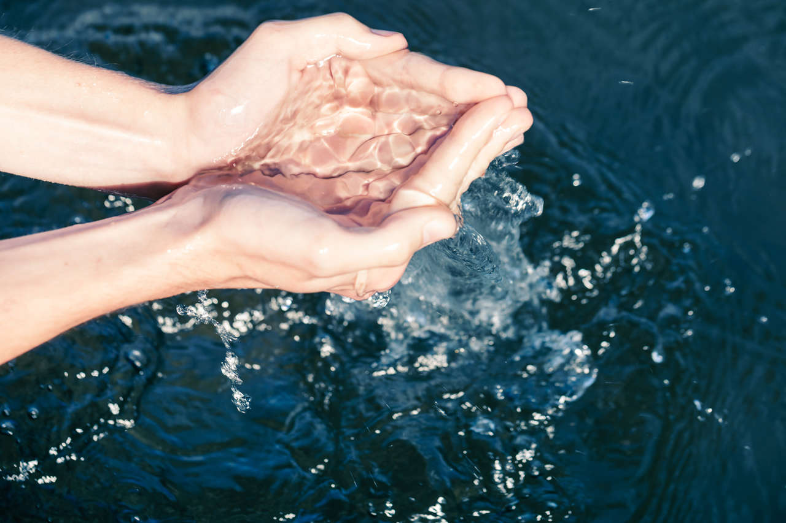

Atras
Recomendaciones del Agua

Para cuidar el agua:
- Cerrar la llave del agua mientras te cepillas los dientes, te afeitas o te enjabonas.
- Utilizar la ducha en lugar del baño.
- Reducir el agua de la cisterna del inodoro.
- Reutilizar el agua para regar plantas o el jardín.
- Vigilar el estado de los grifos de tu casa y reparar cualquier fuga.
- Lavar tu auto con una cubeta y no con manguera.
- No tirar los desechos en el inodoro, sino en el bote de basura.
- Usar poca agua al cocinar.
- No verter aceites por el lavaplatos.
- Utilizar jabones biodegradables y libres de químicos agresivos.
- No arrojar productos contaminantes por las tuberías del agua.
- No tirar nada en ríos, lagos o mares.